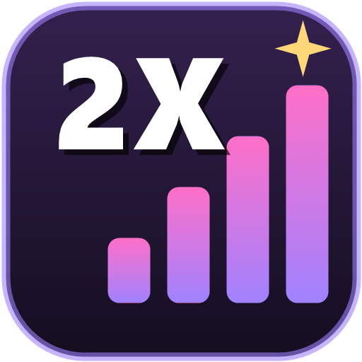
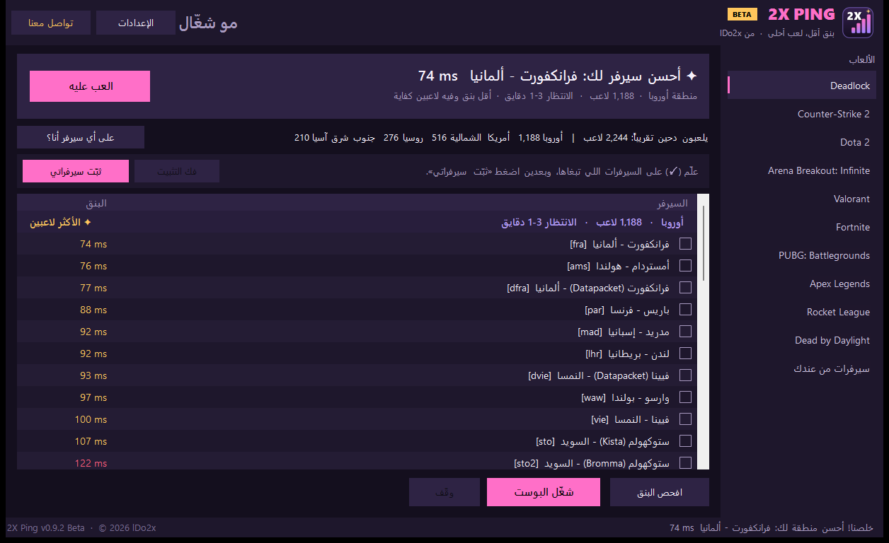

2X Ping برنامج للاعبين على ويندوز، يساعدك تلعب على السيرفر اللي يناسبك ببنق أقل.
يقيس البنق والتذبذب والفقد لكل مناطق سيرفرات اللعبة، ويرتّبها من الأقرب للأبعد.
البرنامج يقترح أقل بنق فيه لاعبين كفاية، وزر «العب عليه» يثبّتك عليه (Deadlock وCS2 وDota 2).
وإنت داخل المباراة، يقولك اسم السيرفر اللي إنت عليه، وهل هو من اختيارك.
يمرّر ترافيك اللعبة بس عن طريق سيرفر وسيط (VPS) لو كان طريقه أسرع من طريق شركة النت.
السيرفرات متجمّعة تحت منطقتها، مع عدد اللاعبين ووقت الانتظار، والأكثر لاعبين عليها ✦.
الوضع البسيط للاعب العادي، والمتقدم فيه كل الأدوات. والعربي هو اللغة الأساسية.
Deadlock، Counter-Strike 2، Dota 2، Arena Breakout: Infinite، Valorant، Fortnite، PUBG، Apex Legends، Rocket League، Dead by Daylight، وأي لعبة ثانية تضيف سيرفرها بنفسك.
البنق هو الوقت اللي تاخذه البيانات عشان تروح من جهازك لسيرفر اللعبة وترجع. والمسافة مو هي كل شي. الأهم هو الطريق اللي تختاره شركة النت حقتك، لأنها أحياناً توديك لفّة طويلة لسيرفر قريب.
مثال حقيقي من فحص على جهاز المطوّر:
دبي أقرب بكثير من فرانكفورت، لكن البنق لها أعلى. السبب إن شركة النت توجّه ترافيك الخليج عن طريق أوروبا ويرجع. هنا يجي دور البرنامج: يوريك هالفرق، ويخليك تختار، ولو عندك سيرفر وسيط يلقى لك طريق أقصر.
افتح 2XPing.exe ووافق على صلاحية المسؤول (Admin)، وبعدها:

الوضع البسيط: بطاقة أحسن سيرفر، والسيرفرات متجمّعة تحت مناطقها
| البسيط (الافتراضي) | المتقدم |
|---|---|
| عمودين: السيرفر والبنق، والمناطق بعناوينها | كل الأعمدة: التذبذب، الفقد، البنق بالوسيط، أحسن طريق |
| بدون تبويبات | تبويبات: السيرفرات، سيرفرات الوسيط، أدوات وسجل |
| البوست يختار الطريق تلقائي | تختار الطريق بنفسك (تلقائي، مباشر، أو وسيط معيّن) |
تبدّل بينهم من الإعدادات، ومن نفس المكان تغيّر اللغة بين العربي والإنجليزي.
هنا الشرح التقني لكل ميزة، بكلام بسيط.
البرنامج يحتاج يعرف وين سيرفرات كل لعبة، وبعدين يقيس الوقت لها:
| الألعاب | من وين يجيب السيرفرات | كيف يقيس |
|---|---|---|
| Deadlock، CS2، Dota 2 | قائمة Valve الرسمية الحية من Steam (GetSDRConfig): كل مركز بيانات وعناوينه | Ping عادي (ICMP) لسيرفرات Valve |
| Valorant، Fortnite، PUBG وغيرها | مراكز بيانات Amazon (AWS) في كل منطقة | وقت فتح اتصال (TCP) على المنفذ 443 |
| Arena Breakout | مراكز بيانات Tencent Cloud (فيها السعودية) | وقت فتح اتصال (TCP) |
يرسل 4 قياسات لكل سيرفر ويحسب منها:
ألعاب Valve تختار لك السيرفر حسب بنقك لكل منطقة. البرنامج يحط قواعد في جدار حماية ويندوز تحجب عناوين المناطق اللي ما اخترتها، فاللعبة تشوفها كأنها "ما ترد"، وما يبقى قدامها إلا اختيارك.
عشان تتأكد بعينك إن التثبيت شغّال:
هنا الطريقة اللي تنزّل البنق فعلاً: بدل ما يمشي ترافيك اللعبة في طريق شركة النت الطويل، يمشي عن طريق سيرفر وسيط (VPS) استأجرته، وطريقه لسيرفر اللعبة أقصر.
| الجزء | التقنية | ليش |
|---|---|---|
| البرنامج | C# و Windows Forms على .NET Framework 4.8 | موجود في كل ويندوز 10 و11، فما يحتاج تثبيت أي شي |
| البناء | مترجم C# المدمج في ويندوز (csc.exe) | ملف واحد صغير (حوالي 160KB) |
| قياس البنق | ICMP Ping و TCP Connect | طريقتين حسب نوع السيرفر |
| تثبيت السيرفرات | جدار حماية ويندوز (netsh advfirewall) | آمن ويتشال بسهولة |
| معرفة السيرفر | pktmon و netstat من ويندوز | مراقبة الترافيك بدون برامج إضافية |
| الوسيط | WireGuard (نفق جزئي) + سكربت Bash على Ubuntu | سريع ومشفّر ومجاني |
| بيانات السيرفرات | Steam API، قوائم AWS، Tencent Cloud | عناوين رسمية ومحدّثة |
| عدد اللاعبين | deadlock-api.com و Steam | بيانات عامة ومجانية |
| النشر | GitHub + GitHub Actions | بناء ونشر تلقائي لكل إصدار |
البرنامج يحتاج صلاحية المسؤول (Admin) عشان جدار الحماية والوسيط. هذا كل شي يغيّره، وكيف ينشال:
| الميزة | إيش يغيّر | متى ينشال |
|---|---|---|
| تثبيت السيرفرات | قواعد في جدار حماية ويندوز | فك التثبيت، أو قفل البرنامج، أو أول ما يفتح |
| البوست بالوسيط | خدمة نفق WireGuard اسمها 2xping | وقّف، أو قفل البرنامج |
| على أي سيرفر أنا؟ | مراقبة ترافيك 15 ثانية | تنحذف على طول بعد الفحص |
| أولوية اللعبة | يرفعها لعالية | لما تقفل اللعبة |
| الجهة | إيش يرسل |
|---|---|
| Steam | رقم اللعبة بس (عشان السيرفرات وعدد اللاعبين) |
| deadlock-api.com | استعلام إحصائي ثابت |
| ip-api.com | عنوان سيرفر اللعبة (عشان يعرف موقعه)، مو عنوانك |
| GitHub | ولا شي، بس يشيّك على التحديثات |
البرنامج ما يجمع أي بيانات شخصية، ولا عنده حسابات، ولا يتتبّع استخدامك.
البرنامج في مرحلة بيتا، ورأي اللاعبين هو اللي يحدد إيش نصلّح ونضيف بعدين. من زر «تواصل معنا» داخل البرنامج تقدر:
| الصفحة الرسمية والتحميل | github.com/lDo2x/2XPing |
|---|---|
| ديسكورد المطوّر | 2x.x |
| الرخصة | MIT: مجاني ومفتوح المصدر |
2X Ping مشروع مستقل وغير تابع لـ Valve أو Tencent أو أي شركة ألعاب. أسماء الألعاب علامات تجارية لأصحابها.
© 2026 lDo2x